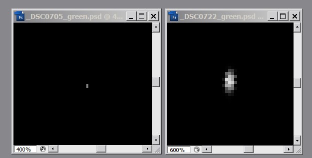
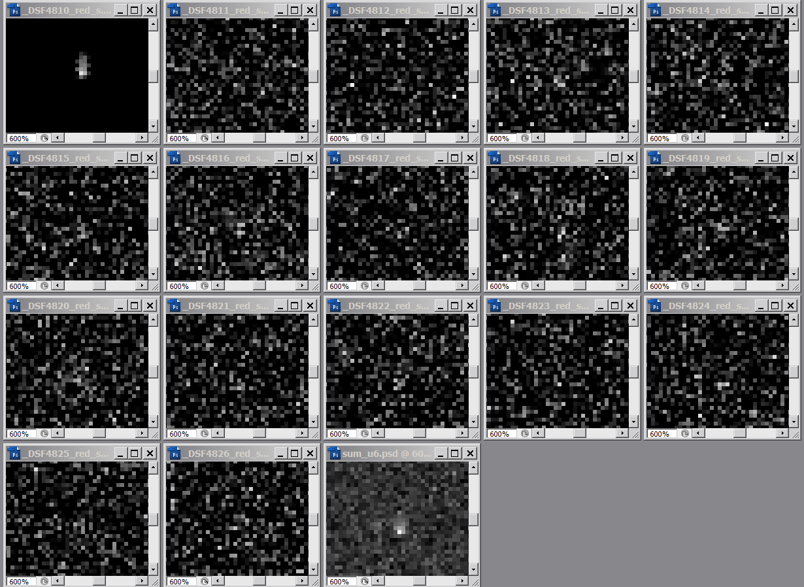
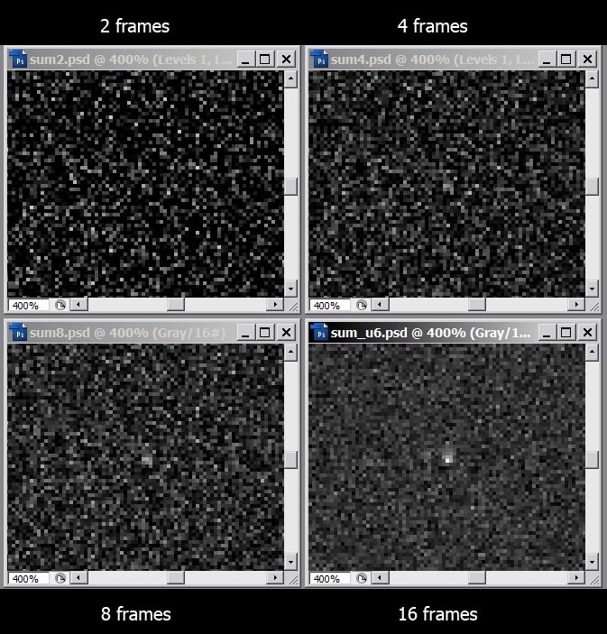
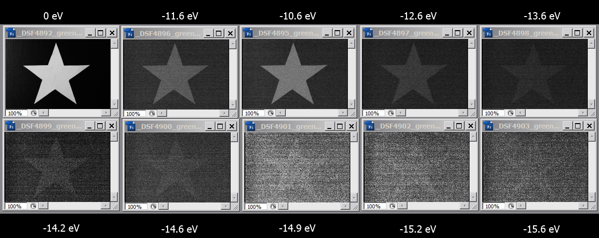
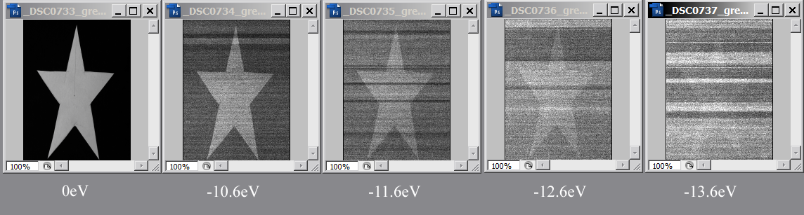
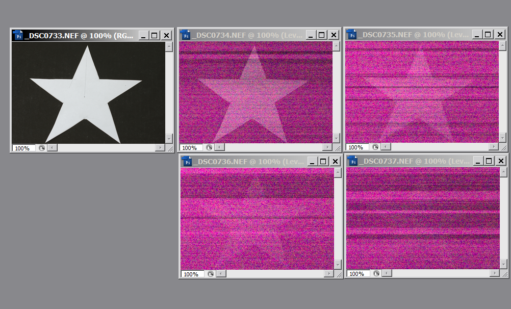

|  |
|  |
|
Сложение меньшего числа файлов дает следующий результат:
 |
| _DSF4892.RAF | 25/10 | F/4 | без фильтра |
| _DSF4895.RAF | 25/10 | F/4 | |
| _DSF4896.RAF | 13/10 | F/4 | |
| _DSF4897.RAF | 10/16 | F/4 | |
| _DSF4898.RAF | 10/30 | F/4 | |
| _DSF4899.RAF | 10/50 | F/4 | |
| _DSF4900.RAF | 10/60 | F/4 | |
| _DSF4901.RAF | 10/80 | F/4 | |
| _DSF4902.RAF | 10/100 | F/4 | |
| _DSF4903.RAF | 10/130 | F/4 |
|  |
|  |
|  |